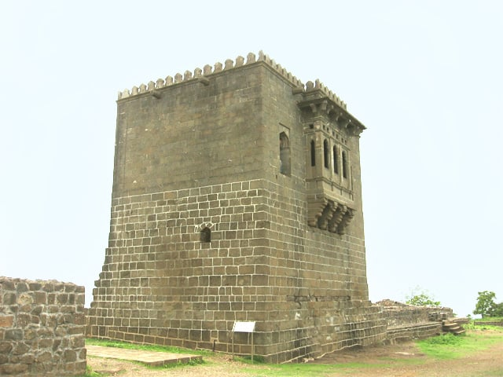

Maharashtra Forts
Raigad Fort

Raigad, situated in the Raigad district of Maharashtra, India, is a hill fort located in the town of Mahad.
new information
shivnari Fort

This fort has a small temple dedicated to godsess Shivai Devi; after whom Shivaji was named
new information
Sinhagad Fort

Sinhagad is an ancient hill fortress located at around 49 km southwest of the city of Pune, India.
new information